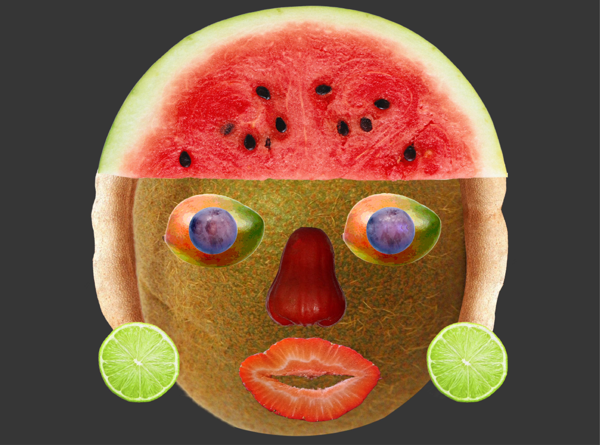

This is a vector stylized portrait of Erykah Badu. It was done on Adobe Illustrator.
This is a Fruit Face portrait, influenced by Aztec Masks. It was completed rendered on Adobe Photoshop. 
This logo was for the San Francisco Democractic Club. It was completed on Adobe Illustrator.